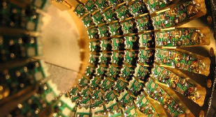
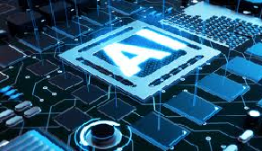

CLOUD ELECTRICITY SERVICE
Quantum computing is a non-classical computer based on the quantum state of subatomic particles representing information expressed as quantum bits or "qubits". Quantum computers are an exponentially scalable calculation model.
Application
- Weather forecast with extremely high accuracy
- Develop new drugs more effectively
- Privacy information is more rigorous than ever
AI TECHNOLOGY
Artificial intelligence or artificial intelligence (English: artificial intelligence or machine intelligence, often abbreviated as AI) is the intelligence represented by any artificial system.
Evaluate
- In Top 9 technology that is developed in 2019
- Promote global development
- Create many utilities for people
INTERNET OF THINGS
Internet of Things (IoT) is a system of computer-related devices, machines, objects, animals or people, provided with unique identifiers and capable of transmitting data over the network that There is no need for human-human interaction or human-computer interaction.
Application
- Customer application
- IoT application in the enterprise
- IoT device application in infrastructure management
Other technologies will be developed in 2019
- Blockchain
- Blockchain has started to be applied in the financial industry and has expanded to government, healthcare, manufacturing, supply chains and other areas. Blockchain is able to reduce costs, reduce transaction time and improve cash flow. The pure blockchain models are not yet developed and can be quite difficult to scale. However, businesses should begin to review and evaluate this technology from now on.
- Virtual Reality
- Augmented reality AR, VR virtual reality and mixed reality are changing the way people perceive and interact digitally. In the coming years the focus will be on mixed reality. Reality mixes exist along a spectrum and include head-mounted screens for AR or VR, as well as smartphones and tablets..
- Smart widgets
- Smart things use AI and learn machines to interact in a smarter way with people and surroundings. These things work automatically or semi-automatically to complete a specific task. You can explore capacity options that automatically guide AI in any object in the organization or customer work environment but these devices are best used for purposes with a gender scope. Because these devices cannot have the same capacity as the human brain to make decisions.
For more information about new technologies of FPT, visit FPT.software